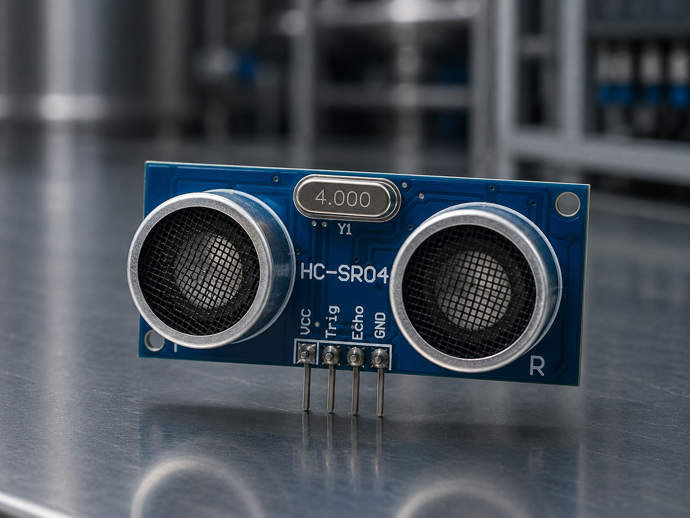
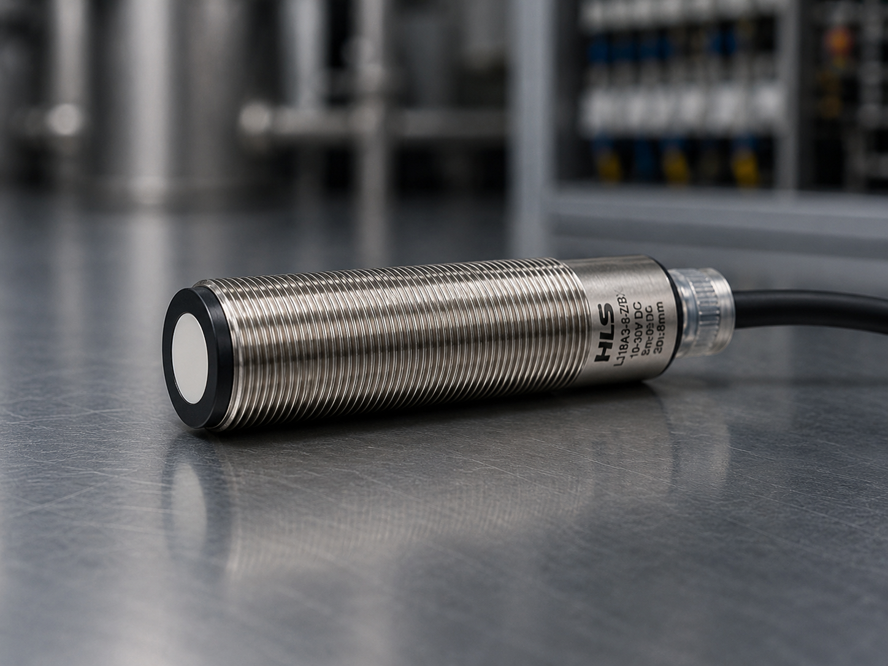
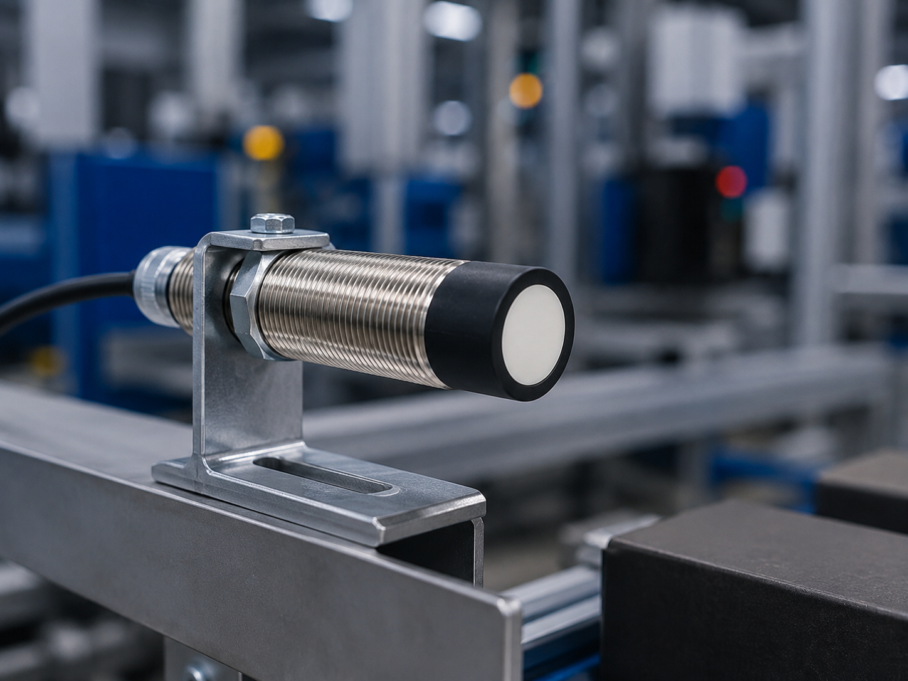

Ultrassônico
Dispositivo que utiliza ondas sonoras de alta frequência para detectar objetos, medir distâncias e monitorar níveis, sem contato físico e independente da cor ou material.

Conceito e Aplicação
O sensor ultrassônico é um dispositivo que utiliza ondas sonoras de alta frequência, acima de 20 kHz, inaudíveis ao ouvido humano, para detectar objetos, medir distâncias e monitorar níveis. Seu princípio de funcionamento baseia-se na emissão de um pulso ultrassônico e na medição do tempo que esse sinal leva para atingir o objeto e retornar ao receptor. Por não depender de propriedades ópticas do alvo, o sensor ultrassônico detecta com igual eficiência objetos transparentes, escuros, brilhantes ou de diferentes materiais, sendo imune a poeira, fumaça e vapores.
Embora operem sob o mesmo princípio físico, os sensores ultrassônicos para Arduino e os industriais possuem diferenças significativas. O modelo HC-SR04, popular em projetos maker, tem alcance limitado de até 4 metros, opera em 5V e não possui proteção contra ruídos elétricos ou intempéries, sendo ideal para prototipagem e fins educacionais. Já os sensores ultrassônicos industriais, como os da Sick ou Pepperl+Fuchs, suportam alcances de até 10 metros, operam em 12V ou 24V, possuem carcaças robustas com proteção IP67 ou superior, saídas analógicas e digitais configuráveis e compensação de temperatura integrada para medições estáveis em ambientes agressivos.
- Medição de nível em tanques e silo;
- Detecção de objetos em ambientes com poeira ou fumaça;
- Controle de presença em sistemas de embalagem.
Informações Complementares

Funcionamento
Emite ondas sonoras de alta frequência e mede o tempo de retorno do eco. A distância é calculada com base na velocidade do som no ar.
Saiba Mais
Aplicações
Medição de nível em tanques e silos, detecção em ambientes com poeira ou fumaça e controle de presença em sistemas de embalagem.
Saiba Mais
Vantagens
Detecta qualquer material independente da cor, imune a poeira e vapores, longo alcance e operação confiável em ambientes agressivos.
Saiba MaisEmpresas
As principais empresas que fabricam sensores ultrassônicos são referências em medição sem contato e detecção em ambientes adversos. Em 2025, diversas marcas se destacam pela robustez, alcance estendido e precisão de seus dispositivos.
A Sick, a Pepperl+Fuchs e a Turck são algumas das principais fabricantes de sensores ultrassônicos utilizados no controle de nível, detecção de objetos e medição de distâncias. Seus produtos oferecem alta confiabilidade mesmo em condições severas com poeira, umidade e variações de temperatura.
SICK: Referência global em sensores ultrassônicos industriais, oferece modelos com alcance de até 10 metros, compensação de temperatura integrada e carcaças com proteção IP67. Seus sensores garantem medições estáveis e precisas em aplicações críticas como controle de nível e detecção de objetos transparentes.
PEPPERL+FUCHS: Líder em sensores para automação industrial, desenvolve sensores ultrassônicos com tecnologia de zona cega reduzida e feixe ajustável. Ideais para detecção de superfícies irregulares, líquidos e sólidos a granel em indústrias químicas e alimentícias.
TURCK: Fabricante alemã de soluções completas em automação, seus sensores ultrassônicos se destacam pela imunidade a interferências eletromagnéticas e design robusto. Amplamente aplicados em ambientes com sujeira intensa, como fábricas de cimento, siderúrgicas e madeireiras.